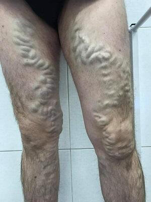
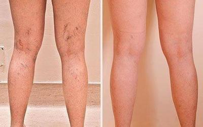

Známá blogerka IG Anna Stone, málem zemřela kvůli obyčejným křečovým žilám. Dívka místo toho, aby něco dělala kvůli křečovým žilám, tomu vůbec nevěnovala pozornost.
Ona, stejně jako všichni blogeři, se zabývala svým vzhledem, ale smrtelně nebezpečné onemocnění křečové žily Anna si nepovažovala za vážný problém. Tak to pokračovalo, až dívka skončila v nemocnici.
Anna v nemocnici
Nebála jsem se a dokonce jsem si zvykla žít s křečovými žilami. Nemohla jsem nosit to, co jsem opravdu chtěla nosit, styděla jsem se na pláži svých černých žil. A když mě bolely nohy a to bylo velmi často, odmítla jsem pozvání přátel a šla jsem domů, místo abych si odpočinula a bavila se na večírku.
Právě tento postoj způsobuje, že lidé umírají na křečové žíly.
Odborníci nepřestávají opakovat jednu jednoduchou pravdu, že křečové žíly se sám o sobě nikam nezmizí, že křečové žíly – to je smrtelně nebezpečné onemocnění, které je příčinou smrti mnoha tisíc lidí po celém světě. Že při prvních známkách tohoto onemocnění by lidé měli začít s léčbou křečových žil.
A ti, kteří mají genetickou predispozici, by měli dělat vše pro prevenci křečových žil.
První příznaky křečových žil: tíha v nohou, otoky, brnění a svědění, rychlá únava nohou a bolest.
Křečové žíly, trofické vředy, nečekaná a bolestivá smrt
Trofický vřed způsobený křečovými žilkami
Zanedbané křečové žíly
Křečové žíly vede k tvorbě krevních sraženin v cévách, které se můžou kdykoliv odtrhnout, dostat se do plic a zablokovat plicní tepnu, a dokonce způsobit infarkt, pokud se taková krevní sraženina dostane do srdce.

Zanedbané křečové žíly
Křečové žíly - neviditelné denní nebezpečí
A zda máte křečové žíly, nebo ne, můžete snadno určit podle tohoto testu
Zkontrolujte si křečové žíly
1. Musíte se vzdát svých plánů kvůli bolesti nohou?
2. Nosíte často boty s vysokými podpatky?
3. Přítomnost příznaků křečových žil u vašich rodičů
4. Přítomnost žilní sítě na nohou, ztmavnutí žil
5. Označte neviditelné známky křečových žil
Bolest nohou při chůzi
Noční křeče
Svědění
Otoky nohou
Pocit ztuhlosti v nohách
Brnění v nohou
6. Jak rychle jsou vaše nohy unavené při chůzi?
7. Přítomnost bolesti nohou po pracovním dni?
Výsledek:
Pozor! Váš výsledek naznačuje, že byste se měli co nejdříve starat o zdraví nohou a začít bojovat s křečovými žilami. Pouze takovým způsobem můžete zachránit své zdraví, předcházet vážným a nebezpečným problémům spojeným s křečovými žilami.
Výsledek:
Pozor! Váš výsledek naznačuje, že byste se měli co nejdříve starat o zdraví nohou a začít bojovat s křečovými žilami. Pouze takovým způsobem můžete zachránit své zdraví, předcházet vážným a nebezpečným problémům spojeným s křečovými žilami.
Jak porazit křečové žíly?
Blogerka Anna Stone oslovila odborníky teprve tehdy, když jí začaly neustále bolet nohy. Tak, že se pohybovala po domě a brečela bolestí.
Bolest byla hrozná, nohy pulzovaly. Zdálo se mi, že hoří! Nemohla jsem vstát z postele, brečela jsem a křičela bolestí. Nevěděla jsem, že křečové žíly mohou vést k takovým důsledkům!
Na klinice byla dívka připojena k kapačce, předepsali jí různé prostředky, aby tím zmírnili bolest. Od bolesti to pomohlo, ale podle Anny, ona se cítila velmi špatně kvůli prostředkům. Měla pocit, že její žaludek byl roztrhaný. A to vše kvůli křečovým žilám, kterým Anna nevěnovala pozornost.
Postupem času bolest zmízela. Odborníci však uvedli, že bolest se vrátí, protože křečové žíly již dosáhly úrovně, že bolest se stává chronickou.
Anna se nejprve rozhodla pro operační zákrok, ale poté, co se dozvěděla o kontraindikacích a dlouhém zotavení, dívka okamžitě odmítla podstoupit operaci.
Důsledek a zotavení po operaci - dlouhé a bolestivé období
Anna chtěla najít moderní a bezpečný nástroj, který pomůže porazit křečové žíly.
Zároveň na klinice narazila na rozhovor s jedním odborníkem, který se křečovými žilami zabývá už půlku svého života, odborník mluvil o novém prostředku, který provede revoluci v oblasti boje s křečovými žilami.
Dagmar Vodičková, odbornice na křečové žíly
"Většina prostředků má úzký směr učínku: zmírnit bolest, uklidnit svědění, pomoci proti otokům. Tento přístup není účinný, protože křečové žíly vyžadují komplexní účinek. Přesně takový takový účinek má prostředek . Tento gel pomáhá aktivovat krevní oběh v nohách, a také aktivuje odtok stagnující krve v žilách. A když tkáně znovu dostanou všechny živiny, křeče, otoky, žilní síť, bolest, pocit ztuhlosti v nohách zmizí»
Prostředek má vynikající složení s komplexem rostlinných extraktů, které jsou známé svým léčivým účinkem na křečové žíly.
Anna si přečetla článek vícekrát, a poté našla výrobce tohoto prostředku a objednala si dvě balení. Gel dostala o tři dny později a tentýž den ho začala používat. Současně se zbavila krásných, ale nepohodlných bot a dělala protikřečovou masáž nohou.

Nohy Anny po jednom kurzu
Prostředek mi pomohl! Dokázala jsem se zbavit nejen žilní sítě, ale také zapomenout na neviditelné známky křečových žil.
Otoky, bolest, svědění a únava jsou pryč z mého života!
Už jsem se nemusela stydět za nohy, mohla jsem běhat, jak jsem chtěla a chodit celé hodiny. Dokonce jsem byla schopna znovu tančit, čehož jsem se musela vzdát, když se mi objevily křečové žíly
Zbavila se křečových žil a dívčí život a její fotografie v IG se změnily, mohla zkoušet a fotit se v těch šatech, které sama chtěla, aniž by se bála, že by někdo kritizoval vzhled její nohou.
Mohla chodit na dlouhé procházky, běhat a dokonce i tančit
Anna uvedla, že gel má celou řadu důležitých výhod oproti jiným prostředkům na křečové žíly:
- Pohodlný Rychle vstřebává, nemastný, neutrální vůně
- Účinný Pomáhá při bolesti nohou během několika minut
- Spolehlivý Po pouhém jednom kurzu hvězdičky na nohou posvítily a neviditelné známky křečových žil jsou pryč
Křečové žíly jsou nebezpečné a skutečně zabíjejí lidi
Na křečové žíly nelze myslet jako na kosmetický problém. Při první známce tohoto onemocnění je třeba okamžitě jednat, jinak křečové žíly budou rychle postupovat, bolest bude chronická, žíly ztmavnou a stlačí se, vytvoří se krevní sraženiny a na nohou se objeví nehojící se trofické vředy.
Pokud jsou křečové žíly vám již známé ne z doslechu, ale z osobní zkušenosti, nástroj vám pomůže vrátit nohy krásu, zdraví a sílu, stejně jako mi pomohl
Objednat lze vyplněním objednávkového formuláře, což je ještě jednodušší než v jiných obchodech.
Vyplnit formulář
Odpovědět na volání operátora pro upřesnění podrobností o doručení
Křečových žil se můžete zbavit, nenechávejte tomu žádnou šanci! Hodně štěstí!
POZOR! Do (včetně) na prostředek na křečové žíly platí sleva 50%. Počet balení za speciální cenu je omezen! Stihněte si objednat balení!
Zbytek balení pro dnešek: 24 balení
Podmínky pro získání :
Pobyt na území Česka (nyní se akce vztahuje pouze na obyvatele této země)
Věk od 40 let (to pomůže poskytnout gelu nejzranitelnější část společnosti)
Jeden kurz v jedné ruce (pro boj s překupníky)
Komentáře
Vendula Macková
Plzeň
Tento gel je pro mě skutečný objev, který změnil můj život. Křečové žíly mě velice změnily. Z aktivní ženy jsem se stála ženou v domácnosti. Jela jsem po práci domů, místo abych šla ven s kamarády. Bylo to velmi smutné. Situaci změnil právě . Absolvovala jsem kurz a z bolesti nohou nezůstala ani stopa.
Agáta Janošová
Praha
Také se mi tento nástroj líbí, rychle se vstřebává, oblečení pak není špinavé.
Barbora Manová
Jihlava
Bolest se zmírňuje během několika minut. Jsem spokojená.
Magdaléna Havlenová
Brno
Zůstalo ještě balení ve slevě?
Daniel Grepl
Jaroměř
Ano, sleva jeětě platí, právě jsem objednal balíček pro manželku.
Natálie Hurtová
Olomouc
Koupila jsem takový gel od známého za mnohém vyšší cenu, jak se ukázalo. Radši bych si to objednala sama. Formulář je fakt jednoduchý.
Svatoslav Strouhal
Brno
Dobrý prostředek na křečové žíly, jakmile jsem začal ho používat, úplně jsem zapomněl na bolesti nohou.
Veronika Hanáková
Chomutov
A já tu dívku znám! dokonce jí sleduju a nikdy bych si nemyslela, že má křečové žíly. Je dobře, že se toho zbavila a teď sdílí tak krásné fotky a nejen svůj obličej.
Marek Švorc
Liberec
S tímhle gelem se moje manželka zbavila křečových žil. Je to dobrý prostředek.
Ester Mikulcová
Rakovnik
Právě jsem si to objednala! Dali mi slevu!
Anastázie Grossová
Jihlava
Po tom jak jsem se zbavila křečových žil mám úplně jiný život. Dokonce jsem dostala povýšení v práci, jinak jsem seděla a myslela jsem jen o tom, abych se rychle vrátila domů a lehla si do postele. Nohy mě moc bolely. A teď je všechno v pořádku.
Gabriela Vlášková
Brno
pomáhá. Doporučuju.
Oto Žalud
Liberec
Pracuji jako číšník, nohy mě večer bolí, ale díky bolesti jsou pryč
Michaela Čeřovská
Jablonec
Miluju ji! Věřila jsem, že bude s krasavcem Johnem ((((


Komentáře
Vendula Macková
Plzeň
Tento gel je pro mě skutečný objev, který změnil můj život. Křečové žíly mě velice změnily. Z aktivní ženy jsem se stála ženou v domácnosti. Jela jsem po práci domů, místo abych šla ven s kamarády. Bylo to velmi smutné. Situaci změnil právě . Absolvovala jsem kurz a z bolesti nohou nezůstala ani stopa.
Agáta Janošová
Praha
Také se mi tento nástroj líbí, rychle se vstřebává, oblečení pak není špinavé.
Barbora Manová
Jihlava
Bolest se zmírňuje během několika minut. Jsem spokojená.
Magdaléna Havlenová
Brno
Zůstalo ještě balení ve slevě?
Daniel Grepl
Jaroměř
Ano, sleva jeětě platí, právě jsem objednal balíček pro manželku.
Natálie Hurtová
Olomouc
Koupila jsem takový gel od známého za mnohém vyšší cenu, jak se ukázalo. Radši bych si to objednala sama. Formulář je fakt jednoduchý.
Svatoslav Strouhal
Brno
Dobrý prostředek na křečové žíly, jakmile jsem začal ho používat, úplně jsem zapomněl na bolesti nohou.
Veronika Hanáková
Chomutov
A já tu dívku znám! dokonce jí sleduju a nikdy bych si nemyslela, že má křečové žíly. Je dobře, že se toho zbavila a teď sdílí tak krásné fotky a nejen svůj obličej.
Marek Švorc
Liberec
S tímhle gelem se moje manželka zbavila křečových žil. Je to dobrý prostředek.
Ester Mikulcová
Rakovnik
Právě jsem si to objednala! Dali mi slevu!
Anastázie Grossová
Jihlava
Po tom jak jsem se zbavila křečových žil mám úplně jiný život. Dokonce jsem dostala povýšení v práci, jinak jsem seděla a myslela jsem jen o tom, abych se rychle vrátila domů a lehla si do postele. Nohy mě moc bolely. A teď je všechno v pořádku.
Gabriela Vlášková
Brno
pomáhá. Doporučuju.
Oto Žalud
Liberec
Pracuji jako číšník, nohy mě večer bolí, ale díky bolesti jsou pryč
Michaela Čeřovská
Jablonec
Miluju ji! Věřila jsem, že bude s krasavcem Johnem ((((